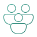
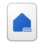

External Data Sources
NYC taxi trip files plus zone, payment, and rate-code reference data.
This version uses official Microsoft Fabric and Azure SVG icons. The diagram shows how raw taxi data becomes semantic context, ontology-guided meaning, and an explainable Fabric Data Agent experience backed by Azure OpenAI.
NYC taxi trip files plus zone, payment, and rate-code reference data.

Single managed environment for data engineering, modeling, ontology, and agent experience.

Curated Delta tables for `trips`, `zones`, `payment_types`, `rate_codes`, and supporting dimensions.
Load, clean, profile, and document the data. This is where metadata and trust signals are added.
Spark SQL views and optional Power BI metrics standardize reusable business calculations.
Entity relationships and business rules add meaning, especially for caveats like missing cash-tip data.
Natural-language interface that uses semantic definitions and ontology context to answer analytically and explainably.
LLM capability behind Copilot-style reasoning used to generate grounded, user-facing explanations.
Icons used here come from Microsoft’s official Fabric and Azure architecture icon packs downloaded into this repository for permitted documentation and diagram use.